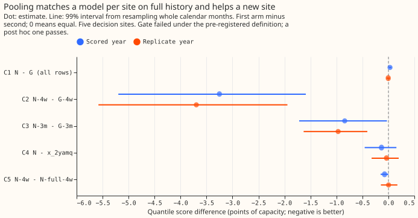
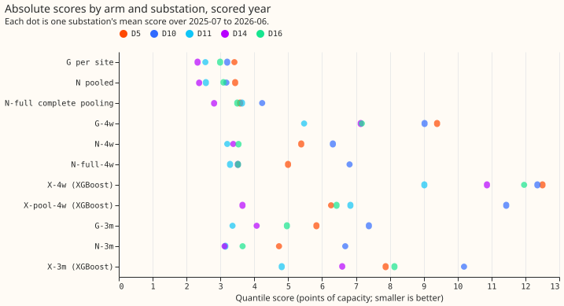
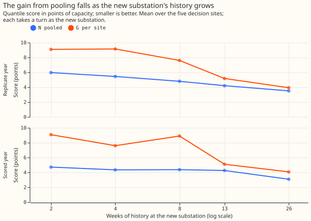
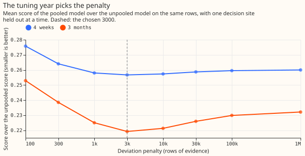
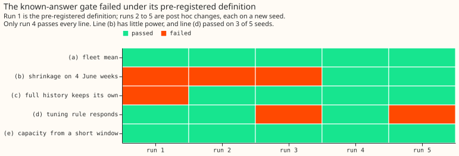
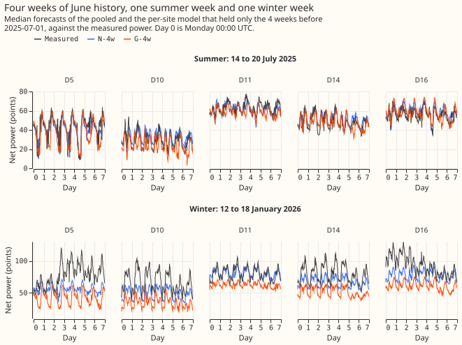
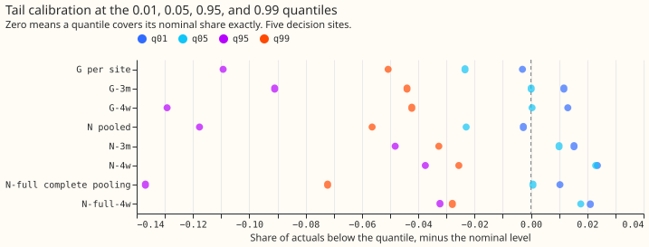
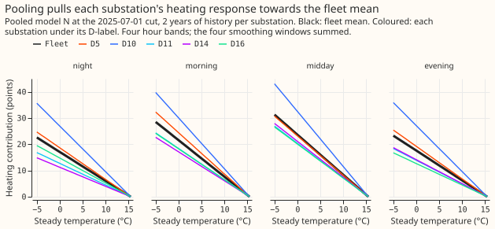
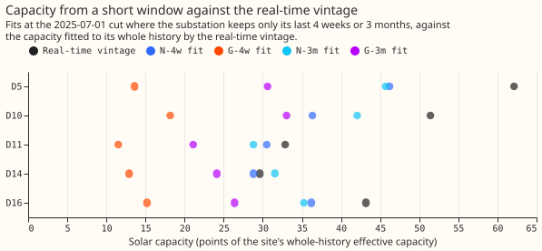

Differentiable physics, N0: a partially pooled convex model across substations
For the five MW Primaries tested, a single convex model shared across substations forecast a new
substation far better than a convex model fitted to that substation alone, and lost almost nothing
where history was long; the known-answer gate failed under its pre-registered definition, so the
verdict is inconclusive. We asked whether
the convex demand-minus-solar model of part 2 can be fitted to several Primary substations at once,
with each substation keeping its own coefficients but pulled towards a fleet mean (the average
of the substations' coefficients). The pull is a ridge penalty on each substation's difference from
the fleet mean, which is called shrinkage because a larger penalty shrinks the differences. A
model with these properties is partially pooled; a model that gives every substation the same
coefficients is completely pooled. We then pretended each of six substations was new in turn,
gave it only its last 4 weeks (June 2025) or its last 3 months of readings, kept 2 years for the
others, and scored the next 12 months. Experiment 105's neural pooled model lost to per-site models
when history was long; this experiment asks whether the loss came from the neural fit.
In convex form, pooling scored 0.03 points worse on long histories where experiment 105's neural
pooled model scored 0.39 worse, which suggests the neural fit caused most of that loss. On the
five decision substations (D5, D10, D11, D14, and D16), the pooled model N scored 0.03 points worse
than the per-site convex model G with 2 years of history (a lower score is better; the plan's margin
was 0.10). With 4 weeks of history N scored 3.3 points better than G (4.35 against 7.60 on the five
decision substations), with 3 months 0.8 points better, in both the scored year and the replicate
year, at all five decision substations. N scored 0.13 points better than lagless XGBoost on full
history, with an interval spanning zero and no better on the error of the mean forecast. Complete
pooling scored 0.07 points worse than partial pooling at 4 weeks (interval touching zero). The
verdict is inconclusive because the known-answer gate failed under its pre-registered definition
(see "The known-answer gate"). Applied to the numbers alone, the plan's rule gives supported.
Reading guide. The scored year is 2025-07-01 to 2026-06-30 and the replicate year 2024-07-01 to
2025-06-30. The five decision substations are the ones that decide the verdict; D9, the sixth
held-out one, is reported beside them. A row is one half-hour of one substation. The scores are
twice the mean pinball loss over 11 quantiles, in points of effective capacity (1% of a series'
capacity), on rows outside the 66 hand-filtered switching transfers; a lower score is better. N is
the pooled convex model, G the per-site convex model, N-full the completely pooled model, and P and
S the pooled and per-site neural models of experiment 105. X is lagless XGBoost, with ERA5 (a
reanalysis from the European Centre for Medium-Range Weather Forecasts) and CAMS (the Copernicus
Atmosphere Monitoring Service's irradiance) as its weather inputs. A suffix such as -4w or -3m is
the history of a new substation, one that holds only its last 4 weeks or 3 months of readings
while the others keep 2 years; fitting it that way is onboarding. The penalty lambda, in
rows of evidence, shrinks a substation towards the fleet mean as hard as if that many half-hourly
rows pulled it there: 0 gives the per-site model and 1,000,000 approximates complete pooling. The
vintage is the capacity as it was known in real time, and a replica fit is the same fit run
12 months earlier to measure the spread of its residuals. The five planned contrasts are each the
score of the first arm minus the score of the second, so a negative number favours the first: C1
is N against G on all rows, C2 and C3 are N against G for a new substation with 4 weeks and
3 months, C4 is N against lagless XGBoost, and C5 is partial against complete pooling for a
4-week substation.
All five contrasts that decide the verdict are in figure 1. The six held-out substations, the cut (2025-07-01), the 4-week and 3-month windows, and the scored rows are those of experiment 105, so the two experiments compare directly; the stored XGBoost predictions agree exactly (X-4w scores 11.146 on the six sites and 11.302 on the five in both experiments).
Figures









Arms, rows, and what was fitted
- Model. The convex model of
studies.dp_gam, fitted jointly bystudies.dp_gam_pooled: each substation's coefficient vector is the fleet mean plus a deviation under a ridge penalty oflambdarows of evidence. Atlambda = 0the fit is the per-site model G exactly (a module test). The profile, holiday, Christmas, harmonic, heating, and lighting coefficients pool; each substation's band means and its solar capacity do not. Complete pooling (N-full) ties the pooled coefficients exactly. - Arms. G (per site), N (
lambda* = 3,000), N-full; for a new substation N-4w, G-4w, N-full-4w, N-3m, G-3m, and the onboarding curve at 2, 8, and 26 weeks; N-4w-pin and G-4w-pin (the vintage capacity, a known-capacity arm that leaks) and N-4w-cappool; XGBoost X-4w, X-3m, and X-pool-4w (one site-agnostic model on the other sites plus the new site's 4 weeks). Every arm is one frozen fit per cut with one seed, in the screening tier. The per-site comparator on the 2, 8, and 26-week points reuses the 4-week ridge of 10, untuned for those histories. - Rows. The D5, D9, D10, D11, D14, D16, and D18 Primaries with usable rows (lockdown and the 66 hand-filtered transfers out), a 2-year window before each cut, no drift, and the day-ahead initialisation (09:00 UTC the day before). Cuts: 2023-07-01 (tuning), 2024-07-01 (replicate), 2025-07-01 (scored), and 2025-02-01 (winter onboarding). A short window needs 70% of its half-hours; the XGBoost short-window arms need all of them, so X-4w has fewer sites at some cuts.
- Capacity. Pinned to the real-time vintage (Part 4's rule), except where the vintage is fitted long after the cut: D9 at the replicate cut and D18 at the scored cut, where the capacity is fitted from the site's own earlier rows in N and G alike. The new substation fits its capacity from its own short window. The 2023-07-01 cut reads the earliest vintage, a 5-week leak. That leak reaches the tuning choices. Through the replica fits at that cut it also reaches the replicate-year spreads of N and G alike.
- Scale. A substation's points of effective capacity are rebuilt from the rows it holds (the
99th percentile of the absolute power in its usable rows, without lockdown or switching rows) when
it is new or holds only part of its window: the new substation of a short-history arm, D18 at the
scored cut (5,452 rows; 3.28 MW against 4.70 MW whole-history), and D9 at the replicate and winter
cuts (a change under 1%). Forecasts convert back to whole-history points before scoring. For the
new substation the whole-history capacity was 1.29 to 2.04 times the rebuilt capacity in the June
4-week windows, 1.09 to 1.66 in the April-to-June 3-month windows, and 0.91 to 0.98 in the January
4-week windows. Pooling D18 in whole-history points would let hindsight reach every decision site
through the fleet mean (
report_d18_whole_history_scale.txtholds the arms fitted that way). - Spread. Each full-history site takes the median-centred residual quantiles of its own replica fit 12 months earlier. A new substation takes the residuals of each other decision site from the replica fits in which that site was the new one with the same weeks of history.
- Tuning (2023-24 only).
lambda*is 3,000 rows: the value that minimises the mean of the 4-week and 3-month score ratios subject to the all-rows score staying within 0.02 points of G's. A ratio is the score over that of the unpooled fit atlambda = 0with the base ridge (a 4-week score of 18.3), not over G with its tuned ridge (about 7.1). Atlambda*the ratios were 0.257 and 0.219 and the all-rows cost +0.015 points. The all-rows score alone preferslambda = 0, and the median-error rule picks 3,000 as well. The per-site comparator's own short-history ridge is 10 for both histories.
Results
- C1, pooling on all rows (N minus G): +0.031 (99% interval +0.012 to +0.056), 1 of 5 sites better; replicate -0.003 (-0.038 to +0.030), 3 of 5. N passes non-inferiority in both years. The loss of score sits in November to March (+0.064) rather than April to October (+0.010). Without D16 the scored estimate is +0.015.
- C2, 4 weeks (N-4w minus G-4w): -3.25 (-5.20 to -1.59), 5 of 5; replicate -3.70 (-5.58 to -1.94), 5 of 5. The gain is -5.55 in November to March and -1.76 in April to October. N-4w scored 4.35 and G-4w 7.60.
- C3, 3 months (N-3m minus G-3m): -0.84 (-1.72 to -0.03), 5 of 5; replicate -0.97 (-1.63 to -0.41), 5 of 5.
- C4, against lagless XGBoost: N minus X-2yamq is -0.13 (-0.46 to +0.16), 3 of 5 sites; replicate -0.04 (-0.32 to +0.20), 3 of 5. X-2yamq is the better of two XGBoost variants on the tuning year, by 0.0003 points, and uses experiment 64's solar offset. N matches the XGBoost bar on full history and is not better on the error of the mean forecast.
- C5, partial against complete pooling for a new site (N-4w minus N-full-4w): -0.07 (-0.15 to +0.00), 3 of 5; replicate +0.00 (-0.14 to +0.17), 2 of 5. Complete pooling is nearly as good at 4 weeks.
- Complete pooling on full history scores 0.64 points worse (N-full minus N, 95% interval 0.39 to 0.98; replicate +0.42, 0.23 to 0.66), 0 of 5 sites better.
- Against experiment 105 (95% intervals, scored year, five decision sites, rows outside the masks). N minus P is -0.51 (-0.85 to -0.24), 5 of 5 sites; N minus S is -0.12 (-0.26 to +0.02), 3 of 5. For a new substation the comparison names the site set. The six-site scores are recomputed from the stored predictions. On the six held-out sites with 4 weeks, N-4w scored 4.17 against 4.04 for experiment 105's pooled neural model P, so P is 0.13 better; G-4w scored 7.30 against 14.38 for its per-site neural model. With 3 months, N-3m scored 4.04 against 4.16 for P (0.12 better) and G-3m 4.70 against 6.03. On the five decision sites the 4-week gap is +0.17 for N (P 4.18) and the 3-month gap -0.12 (P 4.38). P is a frozen-module onboarding and N a joint refit, so the two are not the same procedure. The neural per-site model was the weak comparator, not the convex one.
- The onboarding curve (N minus G, scored year). -4.36 at 2 weeks, -3.25 at 4, -4.53 at 8, -0.84 at 3 months (13 weeks), and -0.99 at 26 weeks; replicate -3.12, -3.70, -2.80, -0.97, and -0.42. N's gain falls by more than half between 4 and 26 weeks. The 8-week gap is mostly one outlier of the per-site comparator, whose untuned ridge scored 21.5 at D10; without D10 it scores about 5.7.
- Winter onboarding (4 weeks ending 2025-01-31, scored to 2026-01-31). N-win4w minus G-win4w is -2.18 (-3.18 to -1.25), 5 of 5, so the gain survives a window that holds heating.
- Known-capacity and capacity-prior arms. With the vintage capacity (a leak), N-4w-pin scored 4.14 and G-4w-pin 6.85, a gap of -2.71 (-4.03 to -1.50); the pooled model also gains where the capacity is known. Shrinking the new site's capacity towards the other sites' median (N-4w-cappool) changed N-4w by -0.01 (-0.01 to 0.00) in the scored year and -0.04 (-0.06 to -0.02) in the replicate year; because the fitted increment cannot be negative, the arm shrinks towards the median and never below it.
- Against XGBoost on a new site. N-4w minus X-4w is -6.96 (-10.60 to -3.61), N-3m minus X-3m -3.24 (-5.31 to -1.43), and N-4w minus the pooled XGBoost X-pool-4w -2.61 (-4.10 to -0.88); in the replicate year the last gap is -1.32 (-3.52 to +1.07). X-pool-4w pools the new site in whole-history points, a hindsight scale that N-4w does not get, so that contrast leans against N.
- References. N minus climatology -1.15 (-1.39 to -0.89) and N minus the manual heuristic -0.57 (-0.85 to -0.25), both 5 of 5 sites. N is 0.54 points worse than lagged XGBoost at 24.5 to 48 hours (95% interval 0.31 to 0.84). Lagged XGBoost uses power lags that N lacks; the pairing is on valid time.
- N-2lambda. The heating-only variants (a tenth or ten times
lambda*for heating, the other families atlambda*) moved the score by at most 0.01 points. A tenth oflambda*for the non-heating families helped by 0.03 (-0.04 to -0.01) in the scored year and not in the replicate year (+0.00); ten timeslambda*for them scored 0.09 to 0.11 worse. - Pooling D18 on its whole-history scale moves C2 by 0.05, C3 by 0.03, and C5 by 0.04 points. With that scale C1 is +0.032, C2 -3.20 (-5.07 to -1.58), C3 -0.81 (-1.69 to +0.004), and C5 -0.03 (-0.14 to +0.09). The rebuilt scale gives the estimates above, so C3's interval excludes zero and C5's reaches zero; the replicate year is the same. No arm without D18 was fitted.
Predictions against outcome
lambda*between 1,000 and 30,000 rows: held (3,000).- C1 within -0.10 to +0.05 in both years, D16 moving it under 0.05: held (+0.031, -0.003; +0.015 without D16). The interval half-width is 0.022.
- C2 between -0.5 and -2.0, interval below zero, 5 of 5 sites both years, over two-thirds in November to March: the magnitude did not hold (-3.3 and -3.7). The sign, the interval, and the 5 of 5 sites held, and the November-to-March share of the gain was 0.67 and 0.69.
- C3 between -0.2 and -1.0, interval below zero, 4 of 5 sites: held (-0.84, upper end -0.03, next to zero; 5 of 5; replicate -0.97).
- C4 between -0.1 and -0.4: held (-0.13).
- C5 between -0.05 and -0.3: held in the scored year (-0.07, interval reaching +0.00) and not in the replicate year (+0.00).
- N beats P by 0.3 to 0.6 and S by 0.0 to 0.3: held (0.51 and 0.12).
- N-full minus N between +0.2 and +0.8: held (+0.64).
- N's gain over G halves by 26 weeks; N-win4w gains less than C2: held (-0.99 against -3.25; -2.18 against -3.25).
- Tails on full history: did not hold. N's q01 and q05 coverage was 0.7% and 2.7%, within 3 points of nominal, but q95 and q99 were 83.2% and 93.4% (replicate 79.9% and 90.7%).
- Tails for a new substation: held. N-4w's q95 coverage in November to February was 0.802 against 0.562 for G-4w, closer to the nominal 0.95.
- Run time: held. Each gate run took 7 to 22 minutes, the tuning about 10 minutes, and the convex fits and the XGBoost arms each under an hour on 6 cores.
The known-answer gate
Under the pre-registered definition the gate failed, four post hoc redefinitions followed, and
only one of five runs passes every line. A line passes when its quantity is within its stated
tolerance. The gate is synthetic: eight substations on the real calendar and weather of the MW
Primaries, with a known fleet mean and known deviations, and noise taken as whole weeks of residuals
from a different substation. It ran five times, each on a fresh seed, so a change of definition and
a change of seed are confounded in every run. All five runs are in this folder (gate_run1.json to
gate_run5.json, gate_runs.csv).
| Line | Run 1 | Run 2 | Run 3 | Run 4 | Run 5 |
|---|---|---|---|---|---|
| (a) fleet mean within 10% and 0.5 points | pass | pass | pass | pass | pass |
| (b) shrinkage on 4 June weeks | fail | fail | fail | pass | pass |
| (c) full history keeps its own coefficients | fail | pass | pass | pass | pass |
| (d) the tuning rule responds to the fleet | pass | pass | fail | pass | fail |
| (e) capacity from a short window | pass | pass | pass | pass | pass |
- Run 1 (pre-registered). Shrinkage was measured on raw heating coefficients against the plan's closed form. The four smoothing windows of each heating band are nearly collinear, so coefficients are shrunk far harder than predictions: (c) read 0.75 and (b) 0.05 against 0.26.
- Run 2 (post hoc 1). After run 1 failed, the slope was measured on the heating contribution to the prediction, on a module review's advice. That change also rescued line (c) (1.01); (b) failed (0.21 against 0.68).
- Run 3 (post hoc 2). The closed form was replaced by one that accounts for the multi-day persistence the plan puts in the noise. (b) failed again (0.04 against 0.79), and (d) failed: with every between-site spread a tenth, the tuned penalty rose only 3.3 times (300 to 1,000) rather than 10.
- Run 4 (post hoc 3). The reference became the joint posterior mean of an oracle that estimates every pooled coefficient from the same 4 weeks. This oracle is a reference estimator that knows the fleet mean, each family's true spread, the noise variance, and the held-out substation's true capacity, which the pooled model has to fit from the same rows; it knows no other coefficient. (b) passed: the slope was 0.17 against the oracle's 0.15 (tolerance 0.15), and the heating error 2.40 against 2.97.
- Run 5 (post hoc 4). A code review found that the oracle's prior mean was the fleet mean before the heating slopes were clipped at zero (15.6% of the true heating coefficients were clipped, and the realised band totals sat 8% to 21% above that mean). Run 5 uses the realised mean. (b) passed (slope 0.17 against 0.32 with the same tolerance, heating error 2.54 against 2.82), and (d) failed again (300 to 1,000).
- Line (b) as run in runs 4 and 5 can barely detect over-shrinkage. In run 4 the oracle's slope (0.15) and the tolerance (0.15) accept any heating penalty from about 300 to at least 10,000 rows, and complete pooling misses by 0.0007; in run 5 the slope half rejects penalties above about 300. The error half passes for every penalty of 100 rows or more.
- The oracle also loses to the pooled fit on heating error. It does so in both runs, even with the corrected prior mean. A heating-only oracle that knows every other coefficient had a heating error of 1.40 in run 4 and 1.48 in run 5. N-4w, at 2.40 and 2.54, would fail against the 1.2-times bound.
- Line (d) is fragile. It passed on 3 of 5 seeds: with a base penalty of 300 "falls tenfold"
holds only at zero, and "rises tenfold" needs a jump of two grid steps. The minimum of the gate's
tuning grid was at 300 rows where the real tuning's was at 3,000, so the synthetic fleet is not a
close proxy for the real one. The sweep in
gate_run4.jsonandgate_run5.jsonshows the heating error flat from 300 to 1,000 rows, which the exploratory N-2lambda arms then tested on real data and found to matter by at most 0.01 points for heating alone.
Checks on the contrasts
- Median forecast minus mean forecast, per site. Zero at every site and arm (report section "Median forecast minus mean forecast"). This holds by construction, because every spread is centred on its median, so it checks nothing about the spread.
- Error of the mean forecast beside each contrast (mean absolute error, five sites). Scored year: C1 +0.036 (quantile score +0.031), C2 -5.61 (-3.25), C3 -1.79 (-0.84), C4 +0.006 (-0.13), C5 -0.111 (-0.074). Replicate year: C1 +0.001 (-0.003), C4 +0.114 (-0.037), C5 -0.013 (+0.003). The error of the mean disagrees in sign for C4 in both years, and for C1 and C5 in the replicate year, all within 0.13 points of zero. N is better than the XGBoost bar only in the quantile score; on the error of the mean it is not.
- Leaving one site out. C2 and C3 keep their sign in both years whichever site is left out (C2 between -3.51 and -3.08 scored, C3 between -1.01 and -0.73). C1's scored estimate stays between +0.015 and +0.046; its replicate estimate moves between -0.008 and +0.001 and turns positive without D16, inside the margin either way. C4 changes sign without D10 in the replicate year (+0.059). C5 changes sign without D10 in the scored year (+0.036) and, in the replicate year, without D5 (-0.093), D11 (-0.003), or D16 (-0.031). C4 and C5 are close to zero for these five substations.
- The plan listed seven audit triggers, situations that require a recorded explanation before
merge; five fired. The
ml-experimentskill defines them, and two private reviews (a numbers audit and a code review, not published) checked them.
| Trigger | What it tests | Fired | Why |
|---|---|---|---|
| 1 | A control fails | yes | The gate failed under its pre-registered definition; N-full-4w beat G-4w (4.42 against 7.60). |
| 2 | A result contradicts its prediction | yes | C2 is 1.6 to 2 times the top of its range, and the tails missed. |
| 3 | Quantile score and mean-error contrast disagree | yes | C4 in both years, and C1 and C5 in the replicate year. |
| 4 | Leaving one site out flips a contrast | yes | C4 and C5, as above. |
| 5 | A nested arm beats the arm that contains it | no | On the tuning year N is 0.015 worse than G and 0.2 better than the 1,000,000-row penalty that approximates complete pooling. |
| 6 | A headline interval is under half or over twice as wide as a sister's | yes | C1's interval is about a tenth as wide as experiment 105's (+0.18 to +0.69), as nested convex fits without seed noise should give. |
| 7 | A later design depends on the result | yes | Experiment 112, Part 5, and Part 6 start from or compare against N. |
- Post hoc explanation of trigger 2. A June window's lack of heating explains part of C2's excess (the November-to-March gain is -5.6). The winter-window gain of -2.18 and the April-to-October gain of -1.76 are both still above the predicted range, so the per-site 4-week fit is weak in every season. The capacity control N-4w-cappool moved N-4w by -0.01 and -0.04 (replicate interval -0.06 to -0.02), small but beyond its own interval.
What the penalty changed at each substation
These substation cards are provisional: one experiment, and the gate failed under its pre-registered definition.
- Heating is the family the penalty moves most. At
lambda*the pooled fit removes 37% to 70% of each decision substation's difference from the fleet mean in the heating coefficients (D10 37%, D11 46%, D16 50%, D5 64%, D14 70%), 8% to 43% in the profile shape and the harmonics, and 15% to 75% in the lighting ramps. D10's heating response stays the steepest of the five (figure 8). - Capacity from 4 weeks. The pooled 4-week fit gave 0.71 to 0.97 of the real-time vintage's capacity (D5 46 against 62 points, D10 36 against 51, D11 31 against 33, D14 29 against 30, D16 36 against 43), while the per-site 4-week fit gave 0.22 to 0.44 (figure 9).
Caveats
- The gate failed under its pre-registered definition, so every number carries the label "gate failed (a post hoc redefinition passes)" and the verdict is capped at inconclusive.
- ERA5 and CAMS are estimates of past weather and flatter the solar term; the main 4-week window is June, so C2 tests the transfer of heating and the daily profile more than solar output.
- The masks and the 66 transfers are hindsight labels, a mild leak shared by every arm. The 2023-07-01 cut reads the earliest vintage (5 weeks of hindsight), and D9 at the replicate cut and D18 at the scored cut fit their capacity from their own rows because their vintage is later than the cut.
- The joint refit is not a frozen-module onboarding. The convex joint fit is exact and cheap, so each new substation entered a refit of the whole pool; the result does not transfer to onboarding a frozen model.
- The rebuild of a new substation's scale is not measured. No arm used the whole-history scale for a new substation; pooling in points leans on the scale being right, which is why it is rebuilt.
- The tails are under-dispersed for full histories. The spread comes from one replica year, so q95 and q99 covered 83% and 93% of the scored year.
- Not run, against the plan. These were cut to keep the run inside its compute slot, and none
carried the verdict:
- the marginal-likelihood
lambdaarm (N-ml); - D18 under N and G as a short-history substation (it is in the pool, but its own forecast is not scored);
- the coastal, bank-holiday, Christmas-run, and days-below-0-degrees cuts of the descriptive tier;
- Part 4's X-best arm (the C4 bar is the 2-year XGBoost);;
- the gate's non-blocking report of the real
lambda*against the closed-formlambda; - the literal "fleet mean shape scaled to the new site's 4-week level" baseline, for which N-full-4w is the closest arm (it also frees each site's band means from its 4 weeks).
- the marginal-likelihood
- The penalty scale is per family and approximate.
lambdareads as rows of evidence in prediction space, but the holiday and Christmas families are shrunk less than that reading says: the gap to complete pooling atlambda1,000,000 is 23% and 26% of its size at 10,000, against 5% to 13% for the other families.
What the next experiment should answer
Whether a pooled convex model with a better spread keeps these gains where it matters for curtailment. The upper tail, where curtailment is decided, is under-covered for full histories, and a spread fitted to a longer or pooled replica is one option. For a 4-week substation, complete pooling scored within 0.07 points of partial pooling in these five Primaries, so a tuned penalty may not be needed there, which narrows the start of a joint demand model across substations to a fleet-shared shape plus per-site band means and capacity. The gate should be rerun with a better-posed oracle before any production port.